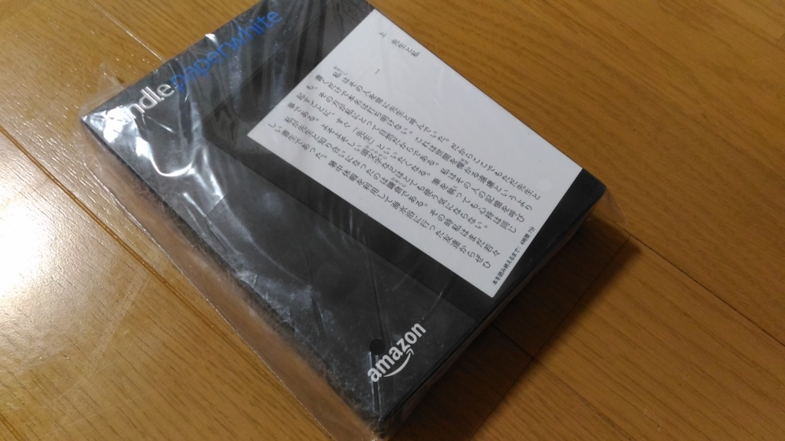
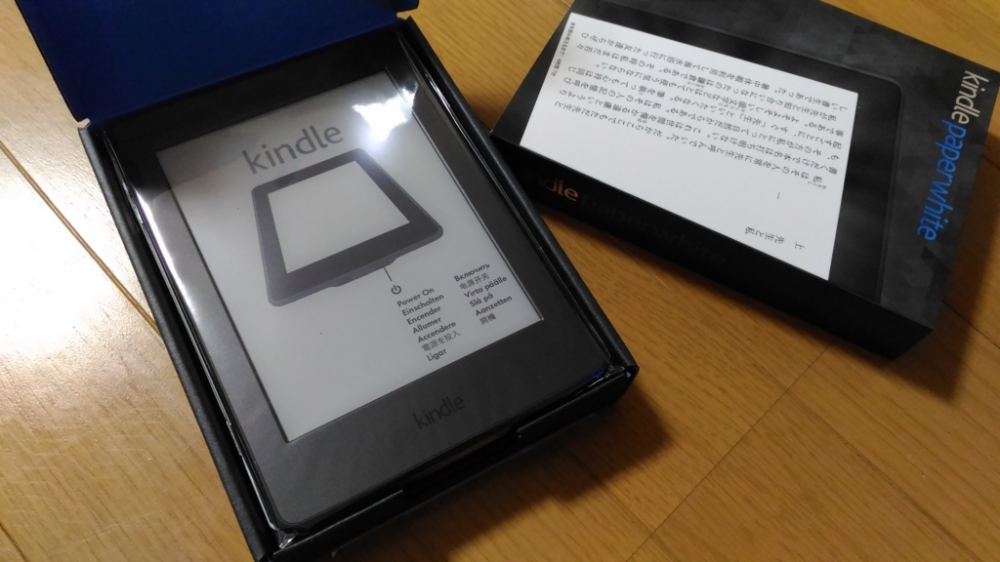
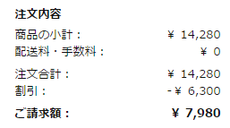

Kindle Paperwhite を買った
公開日：

なかじ先生のブログで Kindle が安売りをしているのを知って、丸一日ぐらい買うかどうか悩んでたんだけど、結局買ってみた。
自分が使うためではなく、父親向けに。
海外出張するときに本を大量に買い込んで二ケタ万円の手数料を取られたという話を聞いて、my 怒髪が天を突いたのだ。いい加減文明の利器を使いこなし、無駄な出費は避けてほしいと思う。

Kindle はいくつかのタイプがラインナップされているが、今回選んだのは Kindle Paperwhite（キャンペーン情報付き）。

割引きのおかげで 7,980 円で済んだ。
初めて手に取ってみた時の印象は、案外小さなぁってこと。小説を読むのにはピッタリだけど、週刊誌とかはどうなんだろうな（Newsweek なんかがストレスなく読める端末ほしいなぁ）。でも、軽いし、解像度は十分だし、電池はもつし（たぶん）、1つぐらい持っていてもいいのかもしれないと思った。
あとちょっとびっくりしたのは、アカウントのセットアップが済んでいたこと。僕のアカウントが既に登録されていて、電源を入れたら自分の本棚にアクセスできた。かつて Amazon のクレジットカードを発行してもらった時も思ったけど、こういうところが至れり尽くせりでいいよなーって思う。
ただ、今回は親父に使ってもらうのが目的だったので、自分のアカウント情報は抹消し、父親のアカウントを登録しなおした。案の定パスワードを忘れてやがったので、パスワードの再発行処理からだ。はやくパスワードなんていうクソシステムはなくなってしまえばいいのに。
なるべく自分で最低限の設定はできるよう、Wi-Fi の設定は親父にやらせてみたが、とくに迷うことなく設定できたようだ（設定の場所だけ教えた）。本当は Wi-Fi の設定が不要な 3G 搭載の Kindle（海外版）をもたせようかと思っていたのだけど、これだったら現地でモバイルルーターを借りて（これはやったことがあるらしい）、自分でなんとかできるだろう。あとはストアの検索の仕方を簡単に教えて、「自分で覚えろ」というスタンスで。空港なんかで提供されている無料のオープン Wi-Fi では本を買わないようにとだけ注意しておいた（取り越し苦労？）。
日本にいる間に Kindle に慣れ、できれば Kindle Unlimited なんかも使いこなしてほしいなぁ。
、Wi-Fi 、4GB、ブラック、広告つき")
Kindle Paperwhite、電子書籍リーダー(第7世代)、Wi-Fi 、4GB、ブラック、広告つき
- 出版社/メーカー: Amazon
- 発売日: 2015/06/30
- メディア: エレクトロニクス
- この商品を含むブログ (13件) を見る